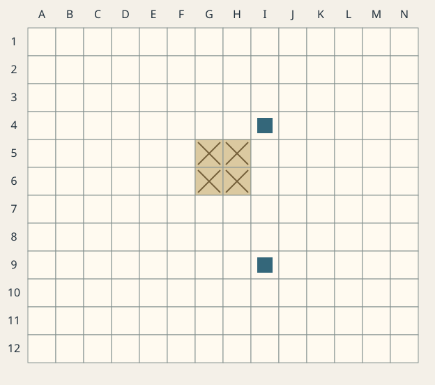

Одинаковые правила, разная история
Все карты совпадают с сеткой нативного пакета: 14 × 12, клетка — 5 футов. G5/H5/G6/H6 — трудная местность; I4/I9 — половинное укрытие. Остальные детали описания декоративны, пока ведущий не изменил поле штатно.
Расстановка и параметры
Начальные клетки героев: B3, B4, B5, B6, C3, C4, C5, C6; штатная подготовленная встреча назначает их присутствующим героям по именам. Противники: L3, L4, L5, L6, M3, M4. Используйте только нужное число фигур. Перед началом герои должны находиться в месте встречи.
Для 3 / 4 / 5 / 6 / 7 / 8 игроков: 2 / 3 / 3 / 4 / 5 / 6 противников, здоровье каждого 12 / 14 / 16 / 18 / 20 / 22. Защита 12; скорость 20 футов; одна ближняя атака +3, 1d4+1 дробящего урона, досягаемость 5 футов.
Враги — простая поддерживаемая модель. Мирные решения и ограничения сцены описаны отдельно; ведущий подтверждает их результат. После первого раунда напомните пути переговоров или отступления. Встречи не запускаются автоматически.
Тележки у личных шкафов
Только если герои настаивают на физическом вскрытии личных шкафов против заявленной границы, взрослые временные работники преграждают путь, а игроки сознательно выбирают столкновение. Обычный осмотр стола и лестницы конфликта не запускает.
Цель и выходы
Прекратить опасную давку и выйти к общему столу, сохранив людям доступ к рабочему месту. Победа не требует победить всех или открывать шкафы; важные улики доступны через Инну.
Согласовать осмотр только общего стола и лестничной площадки, попросить Софью выступить посредницей или просто выйти. Журнал, маршрут и ключи остаются доступны; отказ от боя не наказывается потерей существенной улики.
Поведение противников
Временные работники 28–54 лет в обычной рабочей одежде. Защищают личные вещи и чужое право на границу, не знают тайны убийства. Условный профиль ближнего боя; магия и огнестрельное оружие отсутствуют.
Держатся у шкафов и тележек, стараются вытеснить спорящих к двери без смертельного намерения. Не преследуют отступивших в коридор. Прекращают сопротивление, когда группа отходит от шкафов или Инна фиксирует ограниченный осмотр.
Размер группы
3 игрока: 2 противника, HP 12; 4: 3, HP 14; 5: 3, HP 16; 6: 4, HP 18; 7: 5, HP 20; 8: 6, HP 22. У каждого AC 12, одна атака ближнего боя +3, урон 1d4+1; обычная трость использует профиль quarterstaff. Дополнительные участники могут сопровождать отступающих и вести переговоры. Снижение числа противников не закрывает выход; никаких новых правил давления или таймеров.


Сетка 14×12, клетка — 5 футов. Трудная местность только в G5, H5, G6, H6 (четыре клетки): сложенное бельё. Половинное укрытие в I4 и I9: столы. Западная дверь свободна для отхода; остальные шкафы — фон у восточной стены. Тележки не вызывают автоматической давки или особого урона. Выходы и прочие детали задаёт ведущий в описании; на нативном поле дополнительных препятствий нет.
Порог согласованного осмотра
Только если администрация пытается физически остановить уже согласованный Инной осмотр, охранники преграждают дверной проём, а группа решает удерживать доступ силой. Одного запроса об осмотре или отказа Зинаиды говорить недостаточно для начала боя.
Цель и выходы
Сохранить опечатанные предметы у Инны и безопасно завершить либо отложить осмотр. Отступление с зафиксированным отказом администрации является полноценным выходом; отнимать доказательство у самой инспектора не требуется.
Дать Инне подтвердить согласованный предметный запрос, пригласить взрослого представителя работников наблюдателем или отложить осмотр с новой описью и сохранённой печатью. Свидетельская цепь и сравнение манжеты доступны независимо.
Поведение противников
Совершеннолетние охранники 30–55 лет, ошибочно считающие указание администрации достаточным основанием закрыть кабинет. Не соучастники убийства, не обладают магией; близкий контакт изображается условными игровыми профилями.
Держат дверной проём и предлагают всем выйти, не пытаясь уничтожить предметы. Не нападают на отступающих; прекращают сопротивление при ясном подтверждении полномочий Инны либо после договорённости о времени осмотра и сохранении печатей.
Размер группы
При 3/4/5/6/7/8 игроках соответственно 2/3/3/4/5/6 противников с HP 12/14/16/18/20/22. Все AC 12, одна атака ближнего боя +3, 1d4+1; трости используют профиль quarterstaff. Для больших групп назначьте отдельные задачи сопровождения, наблюдения и переговоров, не увеличивая цель до уничтожения противников. Нет особых правил захвата печатей.

Сетка 14×12, клетка — 5 футов. Трудная местность только в G5, H5, G6, H6 (четыре клетки): коробки у центрального стола. Половинное укрытие в I4 и I9: книжные тумбы. Северная дверь ведёт в свободный коридор. Сумка остаётся у инспектора; прикосновение к ней не означает автоматическую победу. Выходы и прочие детали задаёт ведущий в описании; на нативном поле дополнительных препятствий нет.
Выход из малого зала
Только при выбранном открытом показе, если раздражённые взрослые слушатели физически перекрывают выход, требуя новых допросов, а группа решает противостоять этому. Не возникает на закрытой передаче дела и не запускается из-за обычного несогласия.
Цель и выходы
Дать свидетелям покинуть зал и закончить встречу без навязанного публичного допроса. Безопасный выход или согласованная пауза завершают столкновение; наказывать слушателей за мнение не требуется.
Объявить конец встречи, предложить письменные вопросы, открыть боковой свободный выход и сопровождать желающих уйти. Можно вовсе отказаться от публичного показа: дело передаётся закрыто, без штрафа к доказательствам.
Поведение противников
Посетители юбилейного вечера 35–63 лет, требующие немедленного простого ответа. Вооружены только игровыми условностями ближнего контакта, не служат тайному организатору и ничего не знают сверх услышанного на показе.
Сбиваются возле прохода между стульями, спорят и пытаются удержать внимание выступающих. Не преследуют людей за пределами зала; расходятся при отмене встречи, ясном объявлении отдельного времени вопросов либо появлении Инны между сторонами.
Размер группы
3 игрока: 2 противника по 12 HP; 4: 3 по 14; 5: 3 по 16; 6: 4 по 18; 7: 5 по 20; 8: 6 по 22. AC 12, одна атака ближнего боя +3, урон 1d4+1. Трость — quarterstaff; никаких выстрелов или магии. Дополнительные места получают сопровождение, объявление и наблюдение за согласиями; цель всегда безопасный выход.

Сетка 14×12, клетка — 5 футов. Трудная местность только в G5, H5, G6, H6 (четыре клетки): сбитые стулья. Половинное укрытие в I4 и I9: переносные ширмы. Главный выход на юге и боковой на западе видны с начала. Толпа не имеет отдельной механики, автоматического таймера или неизбежного урона. Выходы и прочие детали задаёт ведущий в описании; на нативном поле дополнительных препятствий нет.